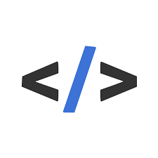
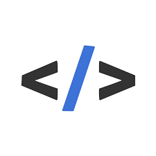

Application développée pour le centre de formation Diginamic. Elle a pour but d'aider les stagiaires en
recherche d'entreprise à organiser leurs candidatures en les consignant dans un tableau kanban, et en facilitant
les échanges avec la chargée de suivi, Aurélie Leforestier.
Celle-ci offre donc un tableau kanban, une messagerie instantanée, une option permettant de téléverser son CV et de le
faire valider par Aurélie, ainsi qu'un système de notification permettant d'inciter les stagiaires à relancer les entreprises
pour lesquelles ils ont postulé il y a plus d'une semaine.
Ce projet a été fait en étroite collaboration avec Lucas Préaux, l'autre développeur du projet, et Valentin Momin, notre chef
de projet fonctionnel.


 
